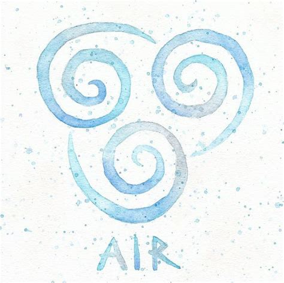
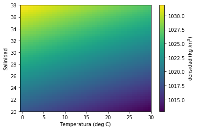

class: center, middle <br/><br/> .title[Dinámica de Fluidos Geofísicos] .subtitle[Clase 07 - Ecuaciones de movimiento] <br/><br/> .author[Semestre 2022-I] .institution[Facultad de Ciencias] <br/> .date[11 de octubre de 2021] <br/><br/> <img style="width:100%" src="./figures/green_waves.png"> <!-- .note[Created with [{Liminal}](https://github.com/jonathanlilly/liminal) using [{Remark.js}](http://remarkjs.com/) + [{Markdown}](https://github.com/adam-p/markdown-here/wiki/Markdown-Cheatsheet) + [{KaTeX}](https://katex.org)] --> --- name: toc class: left <img style="width:40%" src="./figures/ink.jpg"> #Contenido 1. [Repaso clase pasada](#repaso) 1. [Conservación de masa](#masa) 1. [Conservación de momento](#mmtm) 1. [Ecuación de estado](#estado) <!-- Comment out the next slide if you don't want the Table of Contents link --> --- layout: true .toc[[✧](#toc)] --- name: repaso class: left ## La clase pasada aprendimos: * Una partícula libre en un plano en rotación seguirá un movimiento circular en el sistema en rotación (**oscilación inercial**). </br></br> * El sentido del movimiento es opuesto al de rotación (horario para $f>0$ y antihorario para $f<0$). </br></br> * El radio de la circunferencia está dado por $V_0/|f|$, donde $V_0$ es la velocidad inicial y $|f|$ es la magnitud del **parámetro de Coriolis** (f=$2\Omega$). </br></br> * El periodo que la partícula tarda en competar una vuelta se conoce como **periodo inercial** y está dado por $T_p=2\pi/f= \pi/\Omega$. --- name: repaso class: left * En 3D, para cada punto sobre la esfera, el vector $\mathbf{f}=2\mathbf{\Omega}$, donde $\mathbf{\Omega}$ es el vector de rotación, se descompone en una componente vertical *parámetro de Coriolis* $f=2\Omega\sin{\varphi}$ (rotación en el plano horizontal) y una horizontal conocida como *parámetro de Coriolis recíproco* $f^*=2\Omega\cos{\varphi}$ (rotación en el plano vertical, efecto despreciable). </br></br> * En el caso 3D, el movimiento horizontal también es circular (oscilaciones inerciales) pero $f=2\Omega \sin{\varphi}$ --- class: left **1. ¿Cuál es el periodo inercial a una latitud de 45N?** a) $T_p=2\pi/f=\pi/\Omega \sin{45} \approx 17$ hrs b) $T_p=2\pi/\Omega= \approx 77$ hrs c) $T_p=2\pi/f=\pi/\Omega \approx 38$ hrs d) $T_p=2\pi/f=\pi/2\Omega \sin{45} \approx 27$ hrs -- **Respuesta: a** --- class: left **2. ¿Cuál es el valor de $f$ y $f^*$ en el Ecuador?** a) $f=0$, $f^*=1$ b) $f=0$, $f^*=2\Omega$ c) $f=1$, $f^*=0$ d) $f=0$, $f^*=0$ e) $f=2\Omega$, $f^*=0$ -- **Respuesta: b** --- class: left **3. ¿Hacia dónde gira una particula libre en el hemisferio sur ($f<0$)?** a) En sentido antihorario b) En sentido horario -- **Respuesta: a** --- class: left # Ecuaciones de movimiento 1. Queremos establecer las ecuaciones que gobiernan el movimiento de un flujo estratificado en rotación. 2. Una vez establecidas las ecuaciones, queremos simplificarlas (aún más) utilizando la aproximación de Boussinesq. 3. Finalmente tendremos el conjunto completo de ecuaciones que describen a los fluidos geofísicos y podremos empezar a trabajar con ellas. --- name: masa class: left ## Conservación de masa (clase 03) El cambio local en la masa dentro de un volumen de control se compensa con la divergencia local del flujo de masa en el volumen: $$\frac{D\rho}{Dt}+\rho\nabla\cdot\mathbf{u}=0,$$ donde $\rho$ es la densidad (en kg$~$m$^{-3}$), $D/Dt$ es la derivada material $(\partial/\partial t + \mathbf{u}\cdot \nabla )$, y $\mathbf{u}=(u,v,w)$ es el vector velocidad. Esta ecuación también se conoce como *ecuación de continuidad*. En un *fluido incompresible* $\rho$ es constante, por lo que $D\rho/ Dt=0$ y la ecuación de continuidad queda como: $$\nabla\cdot\vec{u}=0.$$ .caption[NOTA: La geometria esférica agrega algunos términos de curvatura que vamos a despreciar considerando escalas de movimiento menores a la escala global.] --- name: mmtm class: left ## Conservación de momento (clase 03) Segunda Ley de Newton $(\sum{\mathbf{F}}=d\mathbf{p}/dt\approx m\mathbf{a})$, escrita por unidad de masa. Sin rotación: $$\rho\frac{Du}{Dt}=-\frac{\partial p}{\partial x}+\mu\Big(\frac{\partial^2 u}{\partial x^2}+\frac{\partial^2 u}{\partial y^2}+\frac{\partial^2 u}{\partial z^2}\Big)$$ $$\rho\frac{Dv}{Dt}=-\frac{\partial p}{\partial y}+\mu\Big(\frac{\partial^2 v}{\partial x^2}+\frac{\partial^2 v}{\partial y^2}+\frac{\partial^2 v}{\partial z^2}\Big)$$ $$\rho\frac{Dw}{Dt}=-\rho g-\frac{\partial p}{\partial z}+\mu\Big(\frac{\partial^2 w}{\partial x^2}+\frac{\partial^2 w}{\partial y^2}+\frac{\partial^2 w}{\partial z^2}\Big)$$ Recuerden que, de manera general, los términos debidos a las fuerzas de superficie se escriben en términos del tensor de esfuerzos. Aquí utilizamos las ecuaciones consitutivas y obtuvimos al término $\partial p_i/\partial x_i$ y la disipación $\mu\nabla^2 u_i$ ¡Esto es una aproximación! --- name: mmtm class: left ## Conservación de momento Para el sistema en rotación encontramos que debemos agregarle el término de Coriolis a la aceleración (clases 5 y 6): $$\rho\frac{Du}{Dt}\boxed{+f^{\ast}w-fv}=-\frac{\partial p}{\partial x}+\mu\Big(\frac{\partial^2 u}{\partial x^2}+\frac{\partial^2 u}{\partial y^2}+\frac{\partial^2 u}{\partial z^2}\Big)$$ $$\rho\frac{Dv}{Dt}\boxed{+fu}=-\frac{\partial p}{\partial y}+\mu\Big(\frac{\partial^2 v}{\partial x^2}+\frac{\partial^2 v}{\partial y^2}+\frac{\partial^2 v}{\partial z^2}\Big)$$ $$\rho\frac{Dw}{Dt}\boxed{-f^{\ast}u}=-\rho g-\frac{\partial p}{\partial z}+\mu\Big(\frac{\partial^2 w}{\partial x^2}+\frac{\partial^2 w}{\partial y^2}+\frac{\partial^2 w}{\partial z^2}\Big)$$ donde x, y, z apuntan en dirección este, norte y arriba, respectivamente, $f=2\Omega \sin{\varphi}$, $f^{\ast}=2\Omega \cos{\varphi}$, $\rho$ es la densidad, $p$ es la presión, $g$ es la aceleración debida a la gravedad (gravedad neta) y $\mu$ es la viscosidad. Hasta ahora tenemos **4 ecuaciones** (3 momento, 1 de continuidad) y **5 incógnitas** ($u$, $v$, $w$, $p$, $\rho$). ¡Necesitamos una para $p$! --- class: left * El sistema cartesiano funciona si las escalas espaciales son mucho menores que la escala planetaria ($L<<R_{Tierra}$ Ej. $L < 1000$ km está bien). * Si consideramos escalas más grandes debemos transformar $x$, $y$ y $z$ a un sistema de coordenadas esféricas y los terminos de curvatura que ingnoramos anteriormente entrarán a las ecuaciones. .center[ <img style="width:40%" src="./figures/mercator.gif"> ] .caption[https://vividmaps.com/map-projections/] --- name: estado class: left ## Ecuación de estado * Relación entre presión y densidad. * Depende del fluido * Distinción entre aire (compresible) y agua (incompresible) .center[  ] Vamos a las notas... --- class: left ## Ecuación de estado LINEAL para agua de mar .center[ ] --- class: left # Referencias Cushman-Roisin y Beckers, Introduction to Geophysical Fluid Dynamics, Capítulo 3.